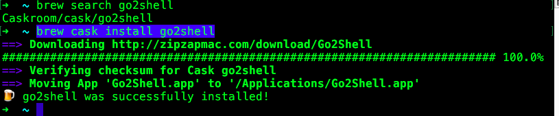

目录
[TOC]
1. Homebrew
Mac下包管理工具，官方称之为 The missing package manager for OS X 。
安装步骤：先打开 Terminal 应用，输入：
~ /usr/bin/ruby -e "$(curl -fsSL https://raw.githubusercontent.com/Homebrew/install/master/install)"
有了 brew 以后，要下载工具，比如 MySQL、Gradle、Maven、Node.js 等工具，就不需要去网上下载了，只要一行命令就能搞定：
~ brew install name
PS：安装 brew 的时候会自动下载和安装 Apple 的 Command Line Tools。
卸载Homebrew：
~ ruby -e "$(curl -fsSL https://raw.githubusercontent.com/Homebrew/install/master/uninstall)"

安装后，命令中使用brew -v命令出现版本号说明安装成功：
~ brew -v
Homebrew 3.0.10
Homebrew/homebrew-core (git revision f2f80f72d5; last commit 2021-04-04)
Homebrew/homebrew-cask (git revision 9169a5fc30; last commit 2021-04-04)
注意：
Homebrew 3.0.10 版本 已经不需要再安装 Cask了，可以直接安装软件了。
2. Homebrew Cask
注意：Homebrew 3.0.10 版本 已经不需要再安装 Cask了，可以直接安装软件了。
brew cask 允许你使用命令行安装 OS X 应用。比如你可以这样安装 Chrome： brew cask install google-chrome 。还有 Evernote、Skype、Sublime Text、VirtualBox 等都可以用 brew cask 安装。brew-cask 是社区驱动的，如果你发现 brew cask 上的应用不是最新版本，或者缺少你某个应用，你可以自己提交 pull request。
应用也可以通过 App Store 安装，而且有些应用只能通过 App Store 安装，比如 Xcode 等一些 Apple 的应用。App Store 没有对应的命令行工具，还需要 Apple ID。倒是更新起来很方便。
几乎所有常用的应用都可以通过 brew cask 安装，而且是从应用的官网上下载，所以你要安装新的应用时，建议用 brew cask 安装。如果你不知道应用在 brew cask 中的 ID，可以先用 brew cask search 命令搜索。
# 安装cask
~ brew install caskroom/cask/brew-cask
# 如果上面命令失败了，则用下面的命令安装：http://www.cnblogs.com/dayou123123/p/6867936.html
~ brew install brew-cask-completion
# 搜索软件
~ brew cask search chrome
# 安装软件
~ brew cask install chrome
# 卸载软件
~ brew cask uninstall chrome
{kind=link}
2.1 安装cask提示：Error: Unknown command: cask
homebrew 从 2.5.11 后，cask 就取消了，可以直接通过brew安装了：
~ brew search iterm2
==> Casks
iterm2 ✔ homebrew/cask-versions/iterm2-legacy
homebrew/cask-versions/iterm2-beta homebrew/cask-versions/iterm2-nightly
~ brew install iterm2
3. 替换系统默认Shell — Oh My ZSH!
Bash作为大多数系统默认安装的Shell，大家都多少有所接触，Zsh和Bash类似都是一个Shell，但是Zsh更注重用户体验和与人的交互，OS X默认也安装好了Zsh，然而你想自己从头开始配置一个顺手的Zsh是比较浪费时间的，有人已经帮我们配置好了，这个流行的Zsh配置叫—Oh My ZSH!，直观的效果如下图所示，代码开源在github。
# Mac OS X默认已经安装好了Zsh，你可以打开终端，输入zsh --version来确认
~ zsh --version
# 切换默认Shell为Zsh, 成功后需要重启终端
~ chsh -s /bin/zsh
# 切换Zsh为Shell， 成功后需要重启终端
~ chsh -s /bin/bash
# 查看zsh配置的环境变量：
~ cat ~/.zshrc
# 此时还没有酷炫的效果，需要安装插件
# 安装Oh My ZSH!
~ sh -c "$(curl -fsSL https://raw.github.com/robbyrussell/oh-my-zsh/master/tools/install.sh)"
# 卸载Oh My ZSH，注意：卸载后，.zshrc文件还在
~ uninstall_oh_my_zsh
{kind=link}

https://www.jianshu.com/p/d194d29e488c
遇到的问题解决：
在安装好后，打开终端出现
执行.sh脚本，异常/bin/sh^M: bad interpreter: No such file or directory
注意，提示中出现了^m符号，这是不同系统编码格式引起的，^M在Linux/Unix中是非常常见的，也就是我们在Win中见过的\r回车符号，可使用vim编辑器打开脚本文件，在命令行模式下，输入下面命令来删除^M:
:%s/\r//g
:wq
这句命令的意思是：％指匹配整个文件，s是指置换的意思，\r代表^M（或者可以使用Ctrl+V Ctrl +M来输入^M，即也可以使用命令:/s^M$//g来达到同样的目的），M后面的$代表匹配行尾的内容，最后的g表示每行中匹配的内容都要进行替换
Unix系统里，每行结尾只有“<换行>”，即"\n"；Windows系统里面，每行结尾是“<回车><换行>”，即“\r\n”；Mac系统里，每行结尾是“<回车>”，即"\r"；。一个直接后果是，Unix/Mac系统下的文件在Windows里打开的话，所有文字会变成一行；而Windows里的文件在Unix/Mac下打开的话，在每行的结尾可能会多出一个^M符号。
4. 窗口管理软件 – SizeUp
SizeUp快速移动软件窗口在屏幕之间，可以在一个屏幕中上下左右移动，也可以在2个显示器之间移动，该软件可以永久免费试用。
sizeup网站介绍： http://www.irradiatedsoftware.com/sizeup/
SizeUp需要你的授权才能控制窗口， 打开‘系统与偏好设置’ -> ‘安全与隐私’ -> '隐私' -> '辅助功能'，把sizeup前面打上对号。
# 使用brew cask安装
~ brew cask install sizeup
{kind=link}
5. 快速切换和打开应用程序 — Manico
MacBook系统默认设置了一个快捷键来显示当前运行中的应用程序，同时按下tab + command.
Manico 是一个为 OS X 设计的快速的 App 启动和切换工具。
manico网站：https://manico.im/
# 使用brew cask安装,也可以去网站上下载后安装
~ brew cask install manico

6. FileZilla
这个软件可以连接远程电脑并且可以上传下载文件，并且在线编辑文件。这个软件在Windows，Linux，Mac OS 都有客户端，下载地址：
https://filezilla-project.org/download.php?type=client
7. keyCue
安装后，只要按住cmd键，就可以显示当前所有可用快捷键，放开后恢复，非常方便。效率生活必备。
http://www.yxdown.com/soft/247108.html
注册码： KC-FMO-032015-S-426-631227-819538-50
8. CheatSheet
CheatSheet 能够显示当前程序的快捷键列表，默认的快捷键是长按 ⌘ 。
安装：
~ brew cask install cheatsheet

9. IINA视频播放器
https://lhc70000.github.io/iina/
https://github.com/lhc70000/iina
终端： brew cask install iina

10. Office 2016 for Mac
http://bbs.feng.com/read-htm-tid-10868252.html
安装完后不要打开office软件，打开破解补丁.dmg，里面有把蓝色的钥匙，双击，出现一把黑色的锁，点击，输入系统密码，OK~搞定Office 2016 for Mac破解版（含破解补丁）
百度盘下载链接: https://pan.baidu.com/s/1c1HIrks 密码: r9kh
http://jingyan.baidu.com/article/ce09321b7478072bff858f03.html
pc6下载：http://www.pc6.com/mac/137931.html
11. install gadmin3
# 终端，已经安装了brew ，cask
~ brew search pgadmin3
Caskroom/versions/pgadmin3
~ brew install Caskroom/versions/pgadmin3
{kind=link}
12. caffeine 防止mac电脑休眠软件
#终端，已经安装了brew ，cask
~ brew search caffeine
Caskroom/cask/caffeine
~ brew cask install caffeine
# 还可以网站下载后安装：http://lightheadsw.com/caffeine/

13. 好用的截屏工具-Snip
使用过QQ的朋友肯定用过上面的自带截图功能,非常好用, 支持添加圈,点,箭头甚至文字, 只要打开QQ, 任何时候都可以通过Ctrl+Command+a来截图, 但是本人平时不太常使用QQ, 截屏功能又非常常用，怎么办呢? 腾讯很贴心地把QQ里的截图功能完整地拆了出来, 成了一个新的App–Snip.
~ brew search snip
esniper
Caskroom/cask/snip Caskroom/cask/snippets
Caskroom/cask/snippet-edit
~ brew cask install snip

14. go2shell 快速进入Shell
go2shell是一个对开发者来说非常有用的app, 使用它可以在Finder里快速进入shell环境.
- 在 App Store中搜索go2shell，点击安装
- 安装go2shell后，打开finder的application文件夹，找到go2shell
- 按住command，用鼠标将go2shell拖到finder的toolbar上
- 在打开的terminal中，输入：
open -a Go2Shell --args config命令来修改go2shell的配置
安装好以后, 打开Finder, 点击Finder上的图标即可进入terminal:
~ brew search go2shell Caskroom/cask/go2shell # 安装 ~ brew cask install go2shell # 配置文件 ~ open -a Go2Shell --args config # 卸载，仅适用于用cask命令安装的 ~ brew cask uninstall go2shell
{kind=link}
{kind=link}
15. 增强资源管理器 — XtraFinder
MacBook自带的资源管理器(Finder)已经可以满足一般的需要，但是当你有大量文件维护操作后，你就需要一个更强大的Finder。XtraFinder完全集成到Finder里面，你根本感觉不出它是一个第三方的应用程序，同时还提供很多增强特性，比如：
像浏览器那样的标签页(Tab)
支持双操作面板(Panel)
增强的全局快捷键，例如新建文件(New File)等
多彩的侧边栏图标
快速在当前文件夹打开终端
快速在当前文件夹新建文件
~ brew search XtraFinder
Caskroom/cask/xtrafinder
~ brew cask install xtrafinder
~ brew cask uninstall xtrafinder
{kind=link}
16. 替换系统默认终端 — iTerm 2
如果你经常使用终端，那么推荐你使用iTerm 2来替代系统自带的终端。关于iTerm 2的特性，请看这里。
iterm2的介绍：
http://www.cnblogs.com/theswiftworld/p/4679010.html
https://www.iterm2.com/features.html
设置 F12 启动iterm2：
1.打开System Preferences，选择Keyboard，切换到Shortcuts这个Tab下，点击Mission Control，取消对应F12的快捷键。
2.打开iTerm的Preferences...， 在ProfilesTab里面，点击下面的[+]添加一个新的profile，为什么要新建一个profile？答案是为了定制将来弹出的终端样式和大小等等参数。新的profile假设命名为guake，(注：guake这个名称是为了向Linux下的Guake终端致敬)，你可以自己任意起个名称，下面会用到。
3.再切换到WindowTab下，将Style，Screen和Space这3个值设置一下。
4.再切换到KeysTab下，设置如下图所示的HotkeyF12。
5.现在你按下F12，就立即得到一个占满全屏的黑色命令行终端，再按一下F12隐藏终端，非常的方便。
6.iterm2终端透明度设置 profile -> 点中profile名字 -> window -> transparency
~ brew cask search iterm2
# 安装 iterm2
~ brew cask install iterm2

17. 有道词典Mac版本
官网下载：http://cidian.youdao.com/index-mac.html
取词方便，打开后，可使用快捷键唤起界面进行查词(alt + cmd + X)
mac 右上角菜单栏时间显示点击出现日历
https://shauninman.com/archive/2016/10/20/day_o_2_mac_menu_bar_clock
18. Bandwidth+ Mac上免费流量监测软件
款可以实时查看网络流量的小软件，支持对 Mac 连接的无线 Wi-Fi 以及移动热点上下行流量进行实时监控记载，而且还能对网络流量进行定额记录，就在 Menubar 下可以看到流量的消耗，并且能够以天为单位将每个网络流量记录导出称 csv 文件。
在 App Store 中搜索 Bandwidth+, 点击安装。
19. MagicanLite 流量监控，CPU,内存使用 温度监控
http://www.magicansoft.com.cn/
这款软件免费，可以监控流量， cup的使用率温度，GPU温度， 内存的使用率等。
在 App Store 中搜索 MagicanLite, 点击安装。
{kind=link}
20. CHM View .chm格式文件阅读器
免费的.chm文件阅读器。
在 App Store 中搜索 CHM View, 点击安装。

21. Foxmail 邮件客户端
22. lantern 蓝灯翻墙软件
https://github.com/getlantern/forum
https://www.getlantern.org/
点击下载安装就好， 每月免费500MB流量。
23. paintbrush 类似Windows画图板的软件
http://mac.brothersoft.com/paintbrush-download.html
http://mac.brothersoft.com/paintbrush.html
Paintbrush的按钮布局和功能与PC电脑Windows自带的画图都很接近，基本不用介绍了。注意那个地雷按钮！他的作用是清除整个画面---没错，炸成白板---我已经中招了（囧），还好后悔操作的快捷键和系统默认的“后退”键一样：“CMD+Z”。安装后，右键的打开方式菜单里会有用paintbrush打开这一项。
Paintbrush version:2.1.1 类似于Windows下面的画板
Paintbrush-2.1.1 http://mac.brothersoft.com/paintbrush-download.html 链接: https://pan.baidu.com/s/1miObeac 密码: qikg
24. fHash 计算 MD5、SHA1文件校验软件
https://itunes.apple.com/cn/app/fhash/id1055555711?l=en&mt=12
app Store 软件中搜索fHash 安装即可。
25. Kill Mouse Accel 关闭mac下鼠标加速
用于罗技等无线鼠标卡顿解决的小插件。
移的越快，鼠标移动距离就越大，这就是鼠标加速度。
http://bbs.feng.com/read-htm-tid-445826.html
26. MagicPrefs 苹果鼠标的多手势辅助软件
下载地址： http://magicprefs.com/
注意：这个软件会是系统的快速移动鼠标以定位鼠标位置
27. Hostbuddy修改host地址的软件
Hostbuddy 是Mac里最简单的方法来管理和更新的 /etc/hosts 文件。添加新条目，打开和关闭现有的通过一次单击。这是完美的临时和生产服务器间进行切换，或只是为了测试你的新网站在上线之前。
快速而无需使用命令行添加主机条目 打开/关闭主机组通过一次单击 不会覆盖现有的 /etc/hosts 文件 与 VirtualHostX 兼容 自动刷新 DNS 缓存
28. FOLX 5Downloader for Mac
https://mac.eltima.com/download-manager.html
mac 下下载工具，有免费版。
29. Charles 抓包工具
Charles 是在 Mac 下常用的网络封包截取工具，在做 移动开发时，我们为了调试与服务器端的网络通讯协议，常常需要截取网络封包来分析。
Charles 通过将自己设置成系统的网络访问代理服务器，使得所有的网络访问请求都通过它来完成，从而实现了网络封包的截取和分析。
除了在做移动开发中调试端口外，Charles 也可以用于分析第三方应用的通讯协议。配合 Charles 的 SSL 功能，Charles 还可以分析 Https 协议。
使用注意事项：
如果没有抓取到数据，尝试关闭代理或浏览器的代理。
选择菜单中的 “Proxy” –> “Mac OS X Proxy” 来将 Charles 设置成系统代理
“Proxy” –> “Proxy Settings” -> "macOS" 要把 里面选项都勾选上
Enable macOS proxy
Use HTTP proxy
Enable macOS proxy on launch
如果不勾选上面选项，则不能抓取到包
使用教程： https://www.cnblogs.com/mawenqiangios/p/8270238.html
30. duet 扩展屏软件
Duet Display 就可以把 iPad 或 iPhone 变成你电脑的第二台显示器！相对于通过「网络远程控制」实现屏幕扩展的同类 APP，Duet 通过 USB 数据线传输画面，无论清晰度、稳定性还是流畅度都完胜。即使开启 Retina 视网膜分辨率，仍能保持 60 FPS 低延迟不卡顿，实际体验相当好
DuetDisplay 电脑端支持 macOS 和 Windows，也就是说，无论是 PC 台式机、笔记本还是 Macbook、iMac 等设备通通都能用它来扩展桌面！而且不仅仅是显示内容，Duet 还可以让这块 “扩展屏幕” 增加「触摸和手势操作」、支持 Apple Pencil 数字笔、以及增加 TouchBar 等特性的支持。
31. sublime text 3
http://www.sublimetext.com/
官网下载后直接安装
32. expect 可以与终端交互的脚本语言
~ brew search expect
~ brew install expect
33. 文件恢复软件TestDisk
http://www.cgsecurity.org/wiki/下载_TestDisk
下载 Mac OS X Intel 的版本。
- 解压软件
- 终端进入软件目录， 运行
./photorec - 进入界面后上下键 选择 磁盘， 左右键选择下方的
search按钮进行搜索 - 选择磁盘系统的类型
- 选择恢复文件存储的目录。
- 按C键开始恢复。
34. Mac下 罗技G602无线鼠标驱动下载
http://support.logitech.com.cn/zh_cn/product/g602-wireless-gaming-mouse#imagegallery
http://support.logitech.com.cn/zh_cn/product/g602-wireless-gaming-mouse/downloads
35. 解压工具
7z : brew install p7zip
~ brew search 7z
~ brew install p7zip
Downloading https://homebrew.bintray.com/bottles/p7zip-16.02.high_sierra.bot
######################################################################## 100.0%
==> Pouring p7zip-16.02.high_sierra.bottle.tar.gz
🍺 /usr/local/Cellar/p7zip/16.02: 103 files, 4.7MB
# 解压命令 解压 演讲稿.7z
7z e 演讲稿.7z
36. typora: Markdown编辑器
https://www.typora.io/
这个 Mac、Windows 都有，可以显示编辑软件，下载相应版本后安装就可以了。
这个编辑器的好处是可以显示 [TOC]目录结构在左边，方便预览查看。
详细介绍： https://www.jianshu.com/p/5256ecc06eec
注意下载安装更新科学上网速度快，否则下载速度很慢。
37. PS6 安装
软件下载：
https://pan.baidu.com/s/1boZWCzH
https://pan.baidu.com/s/1boZWCzH
安装
断开网络。
- 双击安装程序，选择试用(try)，然后点击安装。
- 在应用程序文件夹里面找到PS6，右键显示包内容(show package content), 然后找到contents/framework文件夹，把amtlib.framework文件拷贝到里面，OK。
参考链接： https://www.jianshu.com/p/097353202b66
38. gif截图工具：Gifox
下载地址：https://gifox.io/， 也可以在 App Store中搜索Gifox来下载。
该软件是收费的，不过有免费版的，经过使用，发现免费版最多录制10秒，不知道是不是由于是免费的原因。
还可以使用QQ的截图，里面有录屏然后转成gif就可以。
39. Mac 下载软件
https://www.zhihu.com/question/19552868
下载工具：
FOLX 5：https://mac.eltima.com/download-manager.html
40. Itsycal: 工具栏上显示日历
Mac 的工具栏上的时间，真的只是时间，如果想看日历，只能打开日历应用，很不方便。
Itsycal 可以将日历放到工具栏上，并且支持展示日历时间。
当然也以通过 Itsycal 快速的添加你的日程，而不需要再打开你的日历。
下载地址：https://www.mowglii.com/itsycal/
下载后， 解压，把软件拖到Applications文件夹中

41 工具栏流量监视工具
https://github.com/yujitach/MenuMeters
42 在Mac下启动Tomcat
- 将加压好的 Tomcat 安装包放在某个路径下，重命名为 Tomcat 。
- 终端 进到 Tomcat 的 bin 目录下
- 输入
sudo chmod 755 *.sh设置权限 - 输入
sudo sh startup.sh启动 Tomcat。在浏览器中输入localhost:8080看到 Tomcat 主页即为成功。 - 输入
sudo sh shutdown.sh关闭 Tomcat。
参考资料：https://blog.csdn.net/u011886447/article/details/69361711
43 在文件夹里面鼠标右键新建文件
mac系统自身不支持在文件夹中鼠标右键创建文件，需要安装第三方插件：
1、New File Menu Free：在 App Store 上搜索，这个是免费版的，只能创建txt文件
2、GMRightMouse：在 App Store 上搜索。